—► For a detailed overview of the system click here. (Including software library!)
—► A replica made back in the days can be viewed here.
—► You can find more images of my system here.
I found this Computer sitting on a shelf of a school, and was granted to take it. I got it with a Monitor, Keyboard, a bunch of Floppy Disks, a EPROM Programmer, a switchbox and several Cables. Here is a picture of it when I took it home and a picture of the System after reviving it:
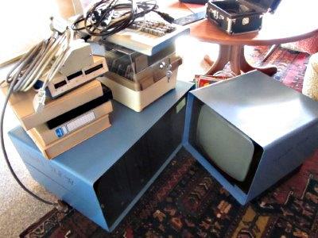 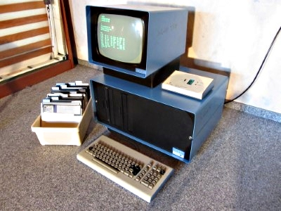I didnt expect that it will work right away, because someone wrote "Scrap 17.8.98" on it, probably someone tried to power it up but failed at it. After I Checked all the Capacitors(they all look like new) and the Voltages the Power Supply outputs, I inserted the Cards again and booted it up.
Suprise, it wasnt working. I inserted a floppy that was labled with "CPM 2.2", reseted the Computer, but still nothing. I had no idea on how to troubleshoot it, so I just measured everything I could, data and adresslines showed some action, clock also worked but honestly, I had no Idea how to fix this thing. Even after hours of research, I only found three Data Catalogs, with a minimal ammount of Information about theese Boards, and even one with Information about the Computer itself. Its called "SYS-80F".
Then I posted my Problem in the Vintage Computer Forum, and I am very glad I did that. Someone called "deramp5113" (His Website) replied to my Thread and said he has a similair Computer called "AID-80F"(A very similair Name), and the Boards have a very similair Layout and the same Chips on them. His Computer only has a Terminal Port, and he told me that he has to press Enter, so the Motherboard can detect the Baud-rate according to the Data sent.
That was also not working for me. He had the Idea to Connect the "VDI Serial Port" to the "Serial Terminal" Port, and it worked! The Screen showed the expected Disk Error Message:
That was perfect for now to test the Keyboard, and most of the Keys seemed to work. I was very relieved, especially because DeRamp told me that this Keyboard is a "Foam & Foil" Keyboard, and I would have needed to replace them.(Keep this in mind, more about this topic later...)
I inserted a floppy disk again, reseted the Computer, pressed enter, and... the Floppy drive made noises and the busy-light lit up! after a second I was also greeted with a promising screen:
I immediately typed in "dir", and... huh? With every keypress I did the prompt appeared again! I reseted the Computer, and the same problem occured. I tried to boot up a different OS, but this one immediately gave me the error "*****ERROR 14 UNIT NOT OPEN :", whatever this means. Clearly something was broken, hopefully not the floppys.
DeRamp suggested me to use his Memory Testing Program, and while typing in the "Loader" that receives the Program File from the PC, I had trouble with entering some letters, the keyboard seemed to die. And like expected, the foam pads inside died, so this keyboard wont be usable for some time until I got replacment pads. Luckily I got the Computer to work with a Terminal Emulator on my Computer.
Back to the memory Program, it listed some faulty adresses, all only on one bit in only one quarter of the Memory(because the Computer uses MK4116(P-4) Chips, the 8-bit data bus needs at least 8 chips to store every bit, and for the full 64K memory you need four for each bit which makes up a total of 32 Chips), wich means only one Chip has some bad bits. After some searching for which exact chip is bad, we found it; its one of the beatiful Ceramic chips on the Motherboard. I replaced it(sadly I only had some Plastic Chips laying around), and all the problems mentioned were gone(Except the Keyboard, obviously).
UPDATE: jdreesen donated me some Ceramic MK4116(P-2) Chips to replace the Plastic Chip, so all Chips are (almost) original again.
Now we can start with the fun part: Playing Games! I have two disks that contain some Games, one including "Sargon"-Chess and a manual for it.
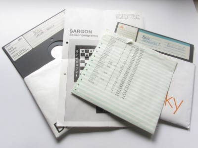 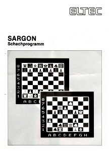 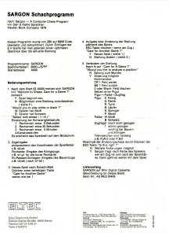They both were used in the "FLP-80DOS", therefor its not possible to read/use them under CP/M. Its a bit tricky to use this OS, but after a bit of fiddeling around I got the Chess Game to run, but have not tried to run any other games yet, especially because the keyboard is not working and its not easy to type without keys on it.
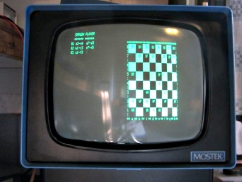I ordered the replacement Foam-Pads at Texelec. They are very well made, and work perfectly in my Keyboard. It took some time to insert them, but every key works again. Here is a comparision of the old and new Pads:
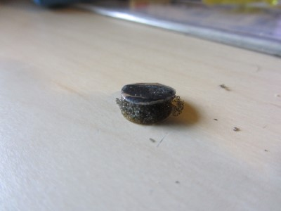
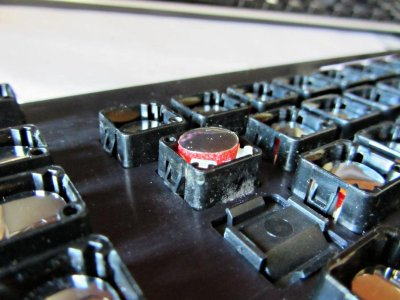
And thats actually it, the computer works again. DeRamp made an Emulator for this computer which allows to also use FLP-80DOS floppy disks. I recently renewed my workbench, so I gave the computer a nice place to sit. I also attached the EPROM programmer and got it to work, now the only thing that im still missing is a proper line printer. I am also planning to make a video(-series?) about this system and showcasing it, but that could still take some time. When I finished it I'll update this page.
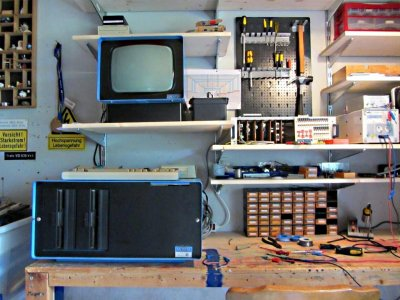 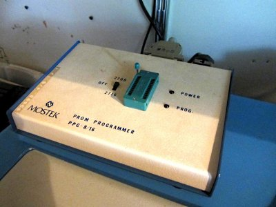 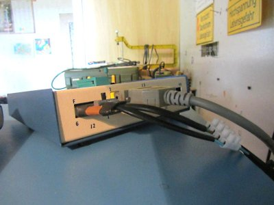Thanks to Peter Ormerod who kindly offered me an almost complete set of manuals for this system, I now also have most of the documentation for this System. I now have the following manuals:
"SYS-80F Dual Floppy Microcomputer System"; "SDB-80E Software Development Board"; "Video Display Interface"; "FLP-80E Flexible Disk Drive Controller Board"; "FLP-80DOS Flexible Disk Operating System V2.1"; "Preliminary Basic Manual"; "Z80 Programming Manual"; "MK3880 Central Processing Unit"; "MK3881 Parallel I/O Controller"; "MK3882 Counter Timer Circuit"; "Mostek Microcomputer Systems Data Book"
I am inexpressible happy and thankful that he sent me those manuals, the system now feels a lot more complete.
Peter Ormerod also was kind enough to tell a little bit about his past with the Mostek SYS-80F. He estimated the price of the complete system at around 7.000-8.000£, but he might mistake it with something else. To put that price into perspective: That would equal around 60.000-68.000£ in 2019.
He used this system to develop CNC machine tool programs and other equipment that needed ‘software’ like a multi-axis co-ordinate measuring machine, shop-floor production monitoring, and so on. Later he even worked on multi-tasking systems based on the Z80, monitoring up to 200 shop-floor machines, running up to six RS232 terminals and a couple of printers.
He remembers that Mostek ran training courses at the Grims Dyke hotel and that this system was a pretty high-end, well built system.
This page was last modified .